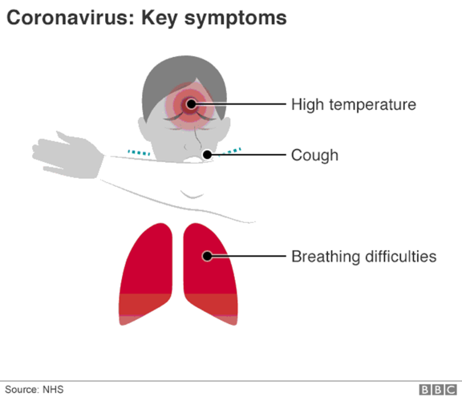

Evaluation Warning: The document was created with Spire.Doc for .NET.
Virus corona: Những câu hay được hỏi nhất cùng lời giải đáp
24 tháng 3 2020
Nhiều quốc gia đã đưa ra những biện pháp mạnh mẽ để ngăn chặn sự lây lan của virus corona. Nhưng bệnh dịch này ảnh hưởng sức khỏe bạn như thế nào, và cơ hội bị nhiễm có cao không?
Dưới đây là lời giải đáp cho những câu hỏi thường được nêu ra nhất của độc giả BBC.
Nếu bạn phục hồi sau khi nhiễm virus corona, bạn có miễn dịch không? - RubyRed trên Twitter.
Còn quá sớm để nói. Virus này chỉ mới xuất hiện từ cuối tháng 12, nhưng từ kinh nghiệm với các loại virus và virus corona khác, cơ thể bạn có thể có kháng thể chốn virus và bảo vệ được bạn.
Với Sars và các loại virus corona khác, chúng ta thường thấy xu hướng không tái nhiễm. Hiện giờ có một số báo cáo từ Trung Quốc về những người được xuất viện sau đó lại xét nghiệm dương tính, nhưng chúng tôi không chắc lắm về những xét nghiệm đó.
Điều quan trọng là những người đó không còn gây nhiễm.
Thời gian ủ bệnh của virus corona bao lâu? - Gillian Gibs
Trung bình phải mất năm ngày để các triệu chứng bắt đầu hiển thị, các nhà khoa học đã nói thế, nhưng một số người sẽ có triệu chứng muộn hơn nhiều so với ước đoán này.
Thời gian ủ bệnh kéo dài 14 ngày, Tổ chức Y tế Thế giới (WHO) cho biết. Nhưng một số nhà nghiên cứu nói rằng nó có thể lên đến 24 ngày.
Biết và hiểu thời kỳ ủ bệnh rất quan trọng. Nó cho phép các bác sĩ và cơ quan y tế tìm ra những cách hiệu quả hơn để kiểm soát sự lây lan của virus.
Bạn sẽ bị bệnh trong bao lâu? - Nita, Nita, Maidstone
Đối với khoảng 80% số người, Covid-19 sẽ là một bệnh nhẹ, hơi giống cúm.
Các triệu chứng bao gồm sốt và ho khan. Bạn có thể cảm thấy người không khỏe trong một vài ngày nhưng sẽ trở lại bình thường trong vòng một tuần sau khi các triệu chứng xuất hiện.
Nếu virus đã tiến sâu vào trong phổi, nó có thể gây khó thở và viêm phổi. Khoảng 17% số người bị nhiễm có thể cần điều trị tại bệnh viện.
Virus corona nguy hiểm thế nào với người bị bệnh hen suyễn? - Lesley-Anne, Falkirk
Lời khuyên của tổ chức Asthma UK là tiếp tục dùng thuốc hít (thường có màu nâu) hàng ngày, theo quy định. Điều này sẽ giúp giảm nguy cơ lên cơn hen suyễn được kích hoạt bởi bất kỳ loại virus đường hô hấp nào, bao gồm cả virus corona.
Mang theo thuốc hít màu xanh giảm cơn khó chịu mỗi ngày, trong trường hợp bạn cảm thấy triệu chứng hen suyễn bùng phát. Nếu bệnh hen suyễn của bạn đang trở nên tồi tệ hơn và có nguy cơ có thể bị nhiễm virus corona, hãy liên lạc ngay với những nơi cung cấp dịch vụ virus corona trực tuyến.
Nguy cơ tử vong của những người khuyết tật khỏe mạnh có cao hơn không? - Abigail Ireland, Stockport
Nhiễm virus corona có thể trầm trọng hơn cho người già và những người mắc bệnh từ trước, như các bệnh về tim và phổi, và bệnh tiểu đường.
Không có bằng chứng cho thấy những người khuyết tật khỏe mạnh - ví dụ, những người không có vấn đề về hô hấp - có nguy cơ tử vong cao hơn vì bị nhiễm virus corona.
Tôi có nên đeo khẩu trang để bảo vệ mình và người khác khỏi virus? - Ann Hardman, Radcliffe, Manchester
Mặc dù các bác sĩ và bác sĩ phẫu thuật thường đeo khẩu trang, nhưng có rất ít bằng chứng cho thấy việc đeo khẩu trang của công chúng tạo nên sự khác biệt.
Cơ quan Y tế Công cộng Anh cho biết họ "không khuyến nghị sử dụng khẩu trang như một biện pháp bảo vệ khỏi virus corona". Họ nói rằng có rất ít bằng chứng về lợi ích rộng rãi từ việc sử dụng khẩu trang, bên ngoài các khung cảnh lâm sàng.
Bạn có thể nhiễm virus từ thực phẩm do người nhiễm bệnh nấu không? - Sean McIntyre, Brisbane, Úc
Một người bị nhiễm virus corona có thể truyền bệnh cho người khác, nếu thực phẩm họ chuẩn bị không được xử lý vệ sinh. Virus corona có thể lây lan qua những giọt ho trên tay. Rửa tay trước khi chạm vào thức ăn và dùng bữa là lời khuyên tốt cho bất cứ ai, để ngăn chặn sự lây lan của vi trùng.

Virus corona có thể truyền qua tay nắm cửa, và tiền hay các bề mặt khác không? - Jean Jimenez, Panama
Nếu ai đó bị nhiễm virus ho vào tay họ và sau đó chạm vào thứ gì đó, bề mặt đó có thể bị nhiễm. Tay nắm cửa là một ví dụ tốt về bề mặt có thể gây truyền nhiễm.
Vẫn chưa rõ virus corona mới có thể sống được bao lâu trên các bề mặt như vậy. Các chuyên gia nghi ngờ là chúng chỉ sống được hàng giờ chứ không phải ngày, nhưng có sự khác biệt về quan điểm.
Tốt nhất là nên rửa tay thường xuyên để giúp giảm nguy cơ nhiễm trùng và sự lây lan của virus.
Chính phủ Trung Quốc từng nói rằng tiền mặt mà tất cả các ngân hàng nhận được phải được khử trùng trước khi phát hành cho khách hàng, nhằm giảm sự lây lan của căn bệnh này.
Sử dụng cách trả tiền với thẻ không cần tiếp xúc có thể giảm thiểu rủi ro xử lý tiền mặt. Tuy nhiên, những thẻ này cũng có thể chứa vi trùng và virus.
Thực hành tốt nhất là rửa tay kỹ sau khi dùng thẻ, hay cầm tiền xu hoặc tiền giấy.